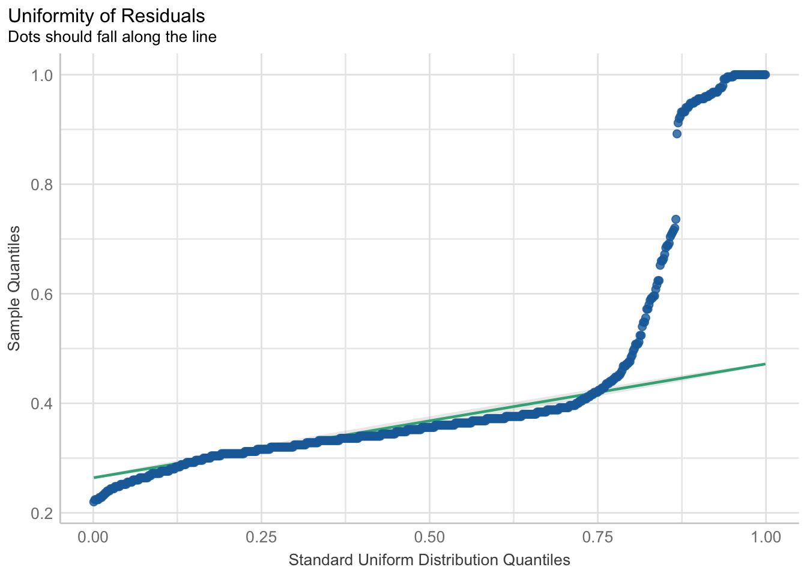

When your outcome variable is a unbounded count variable, it has a lower bound of 0 and no upper bound. The fact that there is no upper bound has to do with the nature of the variable. Simply, when it’s possible that a variable has an unlimited count amount of any of its levels, and the levels of that variable are independent, then a Poisson or Negative Binomial regression is usually the way to go.
An unbounded count variable is easiest to understand and identify with an example. Imagine you are counting how many coins you pick up on the ground in a day on your daily walk. It is possible that at any given day you collect a lot of coins (with theoretically no maximum), and some days you collect zero coins. And it is assumed that the amount of coins you collect on one day does not impact the number of coins you find on any other day. Then the count for the number of coins is best represented by a Poisson or Negative Binomial distribution and we can use either Poisson or Negative binomial regression. And at the of the analysis, we can ask “What is the average number of coins you would expect to pick up in a day?”
5.1 Count Events with a Poisson Distribution
The Poisson distribution is for models when the outcome variable is a count variable; specifically, when the variable is discrete. Unlike other distributions (e.g. Guassian, Binary), the Poisson distribution is described by only one parameter: \(\lambda\). The \(\lambda\) parameter is the mean number of occurrences/events in a specific time interval. Put another way, it’s the average expected count of a level of that variable.
The important thing to know is that Poisson regression’s goal is to model the \(\lambda\) parameter of a Poisson count distribution with a linear and additive combination of an intercept and slope of a predictor variable(s). But there’s an inherent problem with modeling a count distribution with a (non-Poisson) linear model because the outcome variable is bounded from [0,\(\infty\)], and we already know that a linear model works best when the outcome is unbounded (and continuous).
5.2 Defining the Poisson Regression Model and the Log Link Function
As mentioned in the previous section, the Poisson regression model takes into account that the outcome we are modeling is a one sided bounded count outcome. Since a count variable is bounded between [0,\(\infty\)], we need a way to modify the linear model to work with this variable. We are motivated to do this because the linear model works best when the outcome it is modeling is a unbounded (and continuous).
Let’s summarize the details of this model in a more compact way:
\[ y_i \sim Poisson(\lambda)\] Here we are saying that our outcome variable \(y_i\) is Poisson distributed. This is not the part of the model that regression is specifically concerned with – this is an assumption we are placing on the model knowing that the data is a bounded count variable between [0,\(\infty\)].
\[ g(\lambda) = \beta_0 + \beta_1 x_1\] Here we are now defining how we use the simple Poisson regression model. We call it simple because there is only one predictor variable (\(x_1\)). The right side of the equation should be very familiar to us: it is a linear model where we have \(\beta_0\) (the intercept), and \(\beta_1\) (the slope of the predictor variable).
But the left side of this equation is unique to generalized linear models. First, we see that we are assigning \(\beta_0\) and \(\beta_1\) to estimate \(\lambda\), which is the “rate” parameter of the Poisson distribution. However, we also see that \(\lambda\) is inside a function called \(g\), which we now define as our link function.
The link function will allow us to use the linear model (the right side of the equation that is usually assumed with a continuous and unbounded outcome) to estimate the rate, or average number of events, \(\lambda\), which is discrete and bounded.
In Poisson regression, our \(g\) is the “logarithmic function”, which is defined as:
\[ g = log(\lambda) \] or, equivalently,
\[ \lambda = e^g \] Therefore, the full equation becomes,
\[ log(\lambda) = \beta_0 + \beta_1 x_1\]
When we use the log link function with linear predictors, we now can call this “Poisson regression”.
Takeaway: Link Functions
When we use GLMs, we will be using many different link functions depending on the data. In the case of Poisson regression, all this function is trying to do is relate our linear predictors to a response outcome that is discrete and between some bounds (like 0 and \(\infinity\)). More generally, we need link functions because if we did not do this, we are using the linear predictors to predictor some value that is continuous when it may not be continuous (like discrete values for count variables). We also find that when using the appropriate link function, other problems, like the shape of residuals, gets fixed!
5.3 Overdispersion and Count Events with a Negative Binomial Distribution
While a Poisson regression is used for unbounded count variables, a Negative Binomial regression is also used for the same reason. When to use between a Poisson and Negative Binomial is due to overdispersion. Overdispersion occurs when the variance of the count variable is greater than the mean. Overdispersion happens a lot in the real world, so we will always first fit a Poisson distribution, check for overdispersion, and default to Negative Binomial regression if it occurs.
It is worth emphasizing that the interpretation are the same for parameter estimates of both Poisson and Negative Binomial regression, which makes the use of Poisson and Negative Binomial regressions key models for unbounded count variable that are also not ordinal.
This chapter will contain two Data Demonstrations in order to outline the thought process of choosing between a Poisson and Negative Binomial regression.
5.4 Data Demonstration #1: Poisson Regression
We will use the simulated toy-dataset “fish_example.csv” to analyze and predict the relationship of the number of fishes caught and predictor variables like age, sex, and years of experience.
## Load packageslibrary(tidyverse)library(easystats)library(ggeffects)library(MASS) #needed for Negative Binomial Regression## Read in data from filefishing <-read_csv("fish_example.csv")fishing
This data shows records for 60 individual fisherpeople where each row is one fisher.
Here’s a table of our variables in this dataset:
Variable
Description
Values
Measurement
affairs
Number of affairs
Integer
Nominal
gender
Male or Female
String
Nominal
age
Age
Double
Scale
yearsmarried
Number of Years Married
Double
Scale
children
Yes or No
String
Ordinal
religiousness
1 (Low) to 5 (Highs)
Integer
Scale
education
Number of Years of Education
Integer
satisfaction
1 (Low) to 5 (Highs)
Integer
Scale
5.5 Data Demonstration 2: Negative Binomial Regression
Use the affairs.csv dataset and Poisson count regression to predict each participant’s number of affairs from their gender, age, children, yearsmarried and religiousness. Since each participant’s number of affairs is independent of each other, and there is a bound of 0 and no maximum amount, then affairs example of an unbounded count variable.
## Load packageslibrary(tidyverse)library(easystats)library(ggeffects)library(MASS) #needed for Negative Binomial Regression## Read in data from fileaffairs <-read_csv("affairs.csv")affairs
# A tibble: 601 × 8
affairs gender age yearsmarried children religiousness education
<dbl> <chr> <dbl> <dbl> <chr> <dbl> <dbl>
1 0 male 37 10 no 3 18
2 0 female 27 4 no 4 14
3 0 female 32 15 yes 1 12
4 0 male 57 15 yes 5 18
5 0 male 22 0.75 no 2 17
6 0 female 32 1.5 no 2 17
7 0 female 22 0.75 no 2 12
8 0 male 57 15 yes 2 14
9 0 female 32 15 yes 4 16
10 0 male 22 1.5 no 4 14
# ℹ 591 more rows
# ℹ 1 more variable: satisfaction <dbl>
This data shows records for 601 individuals where each row is one participant.
Here’s a table of our variables in this dataset:
Variable
Description
Values
Measurement
affairs
Number of affairs
Integer
Nominal
gender
Male or Female
String
Nominal
age
Age
Double
Scale
yearsmarried
Number of Years Married
Double
Scale
children
Yes or No
String
Ordinal
religiousness
1 (Low) to 5 (Highs)
Integer
Scale
education
Number of Years of Education
Integer
satisfaction
1 (Low) to 5 (Highs)
Integer
Scale
5.5.2 Prepare Data / Exploratory Data Analysis
For Poisson Regression, let’s first treat the discrete variables in this dataset as factors.
Next, let’s plot the distribution of the count of affairs. The main thing to consider is that this is a discrete variable and using Poisson regression inherently takes this into account.
As aforementioned, the key to choosing between a Poisson or Negative Binomial regression is checking for overdispersion in the count variable. Specifically, if the mean or variance of the count variable is roughly the same, then using a Poisson regression is reasonable, but if the variance is significantly greater than the mean, then it would be better to default to a Negative Binomial regression.
For teaching purposes, we will first roughly check for overdispersion by hand, but most of the time it isn’t too difficult to fit both models and check for overdispersion by using a statistical test for overdispersion.
Let’s consider overdispersion in the affairs count variable first by hand, and then confirm it with a test in the later examples.
mean(affairs$affairs)
[1] 1.455907
var(affairs$affairs)
[1] 10.8818
As seen here, we can expect to use the Negative Binomial over the Poisson because we detect overdispersion in the outcome variable. While it is easy to see the difference between the mean and variance in this example, when the values are closer it is harder to test by eye, so we will apply an overdispersion test in the following examples to help us decide between a Poisson or Negative Binomial regression.
Technically, the Negative Binomial model allow us to account that the mean is larger than the variance of the count variable, whereas Poisson models require that the mean should be about the same as the variance.
5.5.4 Models Without Interaction Terms
5.5.4.1 Less Correct: The General Linear Model
Before we fit the Poisson or Negative Binomial regression model, it would be worthwhile to try fitting the less appropriate regular general linear model. We’ll use our old friend lm() to assess the relationship between the outcome variable affairs with the predictor variables gender and age. For more information on general linear modeling, we covered these topics in our Regression Recap chapter.
As the results show, we have a significant partial effect of age, such that a 1 unit increase in age increases the amount of affairs by a small amount (0.03 units of “affair”) while controlling for gender. Despite the challenge of interpreting non-integer values of the amount of affairs, it is worth nothing that the regular lm() “worked” in that it was able to produce an estimate.
5.5.4.1.1 Checking Assumptions
When we fit a model, we always want to see if there were any violations in the assumptions. When using the general linear model via the lm() function for binary responses, taking a look at a plot of the residuals, using check_residuals()1, should be concerning.
## Check residualscheck_residuals(fitlm1) |>plot() # looks bad

Yikes! As you can see, the dots do not fall neatly along the line, especially at the ends of the quantiles. Once this or any other assumption of the general linear model are not met, this is a clear sign that parts of the model may not be trustworthy. Specifically, in this case of the non-uniformity of residuals, there is terrible violation to the model’s uncertainty estimates. While the predictions may be okay and others could argue this violation does not appear too detrimental, we can (and should) do better.
5.5.4.2 More Correct: The Genearlized Linear Model
Now let’s compare our modeling of the same variables using Poisson regression or Negative Binomial regression on the interpretation of estimates and adherence to model assumptions.
First, we will decide which of the two models is better for this question based on an overdispersion test. Then, we will interpret the results of that model.
“Is there a relationship between the age, gender, and the amount of affairs?”
Again, because we have multiple predictors, multiple regression allows us to control for the effects of multiple predictors on the outcome, and we are left with the unique effect of a predictor when controlling for other predictors. In this case, the outcome variable will be affairs, and the predictor variables will be gender (categorical variable) and age (continuous variable).
We did a lot of work already with the lm() in the “Regression Recap”. The glm() function is in many ways the same as the lm() function. Even the syntax for how we write the equation is the same. In addition, we can use the same model_parameters() function to get our table of parameter estimates. Indeed, we will use the glm() function for the remainder of the rest of the online modules.
But notice that the glm() function has one more input argument. This input argument is the “family” input argument, which requires which “family of distributions” to use and which “link function” choice.
5.5.4.3 Choosing Between Poisson or Negative Binomial
For Poisson regression, we supply the Poisson distribution and the log link function.
For Negative Binomial regression, we will use a slightly differnt glm function called glm.nb() from the MASS package. Instead of supplying a family/link function argument, the function already understands we are fitting a Negative Binomial model, so the input argument for glm.nb() is more compact.
fit1_nb<-glm.nb(formula = affairs ~ gender + age, data = affairs)
Recall in the previous section that we calculated the mean and variance of the outcome variable affairs by hand and saw overdispersion in that the variance was clearly greater than the mean. Now, we will apply a test for overdispersion to choose between the two models using the check_overdispersion() function. We recommend this test prior to interpreting any model parameters.
Let’s check for over dispersion in the Poisson model:
check_overdispersion(fit1_poisson)
# Overdispersion test
dispersion ratio = 7.366
Pearson's Chi-Squared = 4404.836
p-value = < 0.001
Overdispersion detected.
As expected, overdispersion was found when fitting the data with the Poisson model. Now, let’s check for overdispersion in the Negative Binomial model:
check_overdispersion(fit1_nb)
# Overdispersion test
dispersion ratio = 0.481
p-value = 0.032
Underdispersion detected.
Therefore, for the same combination of predictor variables and count outcome variable, we will use the Negative Binomial model. This takes overdispersion into account and also takes advantage of the fact that we can interpret the estimates interchangeably between both models.
Forgetting overdispersion
It is likely that not checking for overdispersion affects model assumptions. For example, if we were to check the residuals for the fit1_poisson model, we would see clear violation to the assumption.
Using the Negative Binomial model, let’s interpret use the model_parameters function and interpret the estimates.
model_parameters(fit1_nb) |>print_md()
Parameter
Log-Mean
SE
95% CI
z
p
(Intercept)
-0.61
0.46
(-1.63, 0.43)
-1.33
0.185
gender (male)
-0.04
0.26
(-0.54, 0.47)
-0.16
0.874
age
0.03
0.01
(-6.93e-04, 0.06)
2.19
0.029
The parameter table output from a model fit with glm.nb() looks very similar to parameter table outputs from models fit with lm(). But there is a big difference – in glm() and glm.nb() models, we are no longer working in the same raw units!
This difference is apparent in the second column of the output table: “Log-Mean”. Because we fit a Negative Binomial regression with a log function, the parameter values are in “log-mean” unit.
Due to the nature of the dummy coded categorical variable gender, we will assess the parameters from each level of that variable first.
The intercept is the log mean of affairs for female participants while accounting for the effect of age. In this case, female participants who are 0 years old have an average log mean of -0.61 affairs. This intercept value is not significantly different from 0. This will make more sense once we exponentiate this value. The exp(-0.61) = 0.54. Therefore, the baseline number of affairs for female participants who are 0 years old is 0.54.
The log mean of affairs for male participants while controlling for the effect of age is -0.04, or 0.04 less, than female participants. This slope is also not significantly different from a log mean of 0. Once again, this value makes more sense when we exponentiate it. The exp(-0.04) = 0.96, which is the multiplicative effect of a male participant compared to females; in other words, male participants at age 0 have a 0.96 times the expected number of affairs of females aged 0. Note that the value is 0.96 is less than 1, so males have slightly lesser affairs than females.
As you increase age by 1 unit, there is an increase in the log mean of both male and female participants by 0.03. This slope of age is significantly different from 0 (p<0.05). If we exponentiate this, exp(0.03) = 1.03, or 3% increase (because it is a multiplicative effect). We can interpret this as for every 1 year increase in age for male and females, there is a 3% increase in the number of affairs.
Note that we used the exp() a lot in order to make our log-mean estamates make more sense. We could have immediately printed the parameter table of model_parameters() with the argument “exponentiate = TRUE”:
When the value log-mean values are exponentiated, they are called “Incident Rate Ratios” or IRR. As aforementioned, they are the multiplicative effects on the baseline value (in this case, the baseline group is female participants at age 0). For interpretation purposes, we can consider the following guidelines:
IRR > 1, the comparison group has a higher outcome value than the baseline.
IRR < 1, the comparison group has a lower outcome value than the baseline.
IRR = 1, there is little to no difference between comparision and baseline.
5.5.4.5 Estimate means
Because we have a dummy-coded predictor, gender, we can estimate the mean number of affairs for females and males averaged over age with estimate_means():
gmeans1 <-estimate_means(fit1_nb, by =c("gender")) gmeans1 |>print_md()
Estimated Marginal Means
gender
Mean
SE
95% CI
female
1.44
0.25
(1.02, 2.03)
male
1.38
0.25
(0.96, 1.99)
Marginal means estimated at gender
Notice that if we take the ratio between males and females, we get the IRR for males: 1.38/1.44 = 0.96, or males have a 0.96 multiplicative (so, lesser) amount of affairs compared to females.